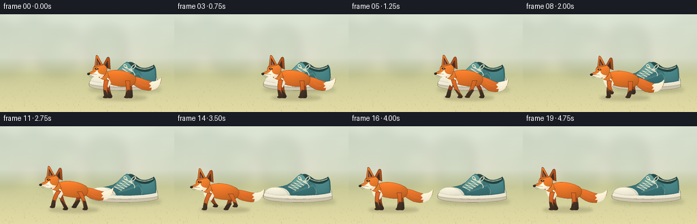
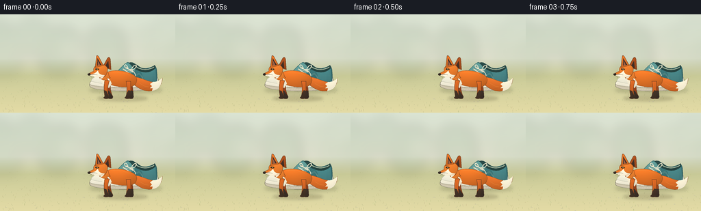

CODING AGENTS AS PIXEL WORLD MODELS
traex/GPT-6.1-Sol · dynamic_spatial_relationship_0026
点击播放 · 原生 RGB 像素
逐轮保存的候选
回放视频、检查图与代码变化。
每份候选均可单独播放。实际图片检查记录在下方工具轨迹中。
候选 01播放与检查图
点击播放 · 原生 RGB 像素


展开代码变化
--- 上一保存版本
+++ 本次保存版本
@@ -0,0 +1,188 @@
+from pathlib import Path
+import math
+import numpy as np
+from PIL import Image, ImageDraw, ImageFilter
+from artifact_io import save
+
+W,H,S=256,144,4
+SIZE=(W*S,H*S)
+rng=np.random.default_rng(41)
+
+def path(cmds):
+ pts=[]; p=(0,0)
+ for cmd in cmds:
+ if cmd[0]=='M': p=cmd[1:];pts.append(p)
+ elif cmd[0]=='L': p=cmd[1:];pts.append(p)
+ elif cmd[0]=='C':
+ p0=np.array(p);a=np.array(cmd[1:3]);b=np.array(cmd[3:5]);e=np.array(cmd[5:7])
+ for t in np.linspace(0,1,24)[1:]: pts.append(tuple((1-t)**3*p0+3*(1-t)**2*t*a+3*(1-t)*t*t*b+t**3*e))
+ p=tuple(e)
+ elif cmd[0]=='Q':
+ p0=np.array(p);a=np.array(cmd[1:3]);e=np.array(cmd[3:5])
+ for t in np.linspace(0,1,18)[1:]:pts.append(tuple((1-t)**2*p0+2*(1-t)*t*a+t*t*e))
+ p=tuple(e)
+ return pts
+
+def line(im,pts,color,width=1):
+ ImageDraw.Draw(im).line([(round(x*S),round(y*S)) for x,y in pts],fill=color,width=max(1,int(width*S)),joint='curve')
+def ellipse(im,box,col):
+ ImageDraw.Draw(im).ellipse(tuple(round(v*S) for v in box),fill=col)
+
+def shape(im,pts,col,outline=None,shade=0.16):
+ # Soft directional shading within independently rasterized vector forms.
+ coords=np.array(pts)*S
+ x0=max(0,int(np.floor(coords[:,0].min()))-3);y0=max(0,int(np.floor(coords[:,1].min()))-3)
+ x1=min(W*S,int(np.ceil(coords[:,0].max()))+4);y1=min(H*S,int(np.ceil(coords[:,1].max()))+4)
+ if x1<=x0 or y1<=y0:return
+ mask=Image.new('L',(x1-x0,y1-y0),0)
+ ImageDraw.Draw(mask).polygon([(x-x0,y-y0) for x,y in coords],fill=255)
+ yy,xx=np.mgrid[y0:y1,x0:x1]
+ u=(xx-x0)/max(1,x1-x0);v=(yy-y0)/max(1,y1-y0)
+ light=1+shade*(.5-v)+shade*.26*np.sin(u*np.pi)-shade*.25*u
+ rgb=np.clip(np.array(col)[None,None,:]*light[...,None],0,255).astype('uint8')
+ layer=Image.fromarray(rgb)
+ im.paste(layer,(x0,y0),mask)
+ if outline:line(im,pts+[pts[0]],outline,.65)
+
+# Sunlit meadow, deliberately quiet to keep both subjects legible.
+yy,xx=np.mgrid[0:H*S,0:W*S]
+y=yy/S;x=xx/S
+sky=np.array([219,228,212])[None,None,:]*(1-y[...,None]/230)+np.array([247,231,201])[None,None,:]*(y[...,None]/230)
+ground=np.array([198,201,151])[None,None,:]+((y-80)/70)[...,None]*np.array([33,20,16])[None,None,:]
+blend=np.clip((y-64)/26,0,1)[...,None]
+bg=np.clip(sky*(1-blend)+ground*blend,0,255).astype(np.uint8)
+background=Image.fromarray(bg)
+blur=Image.new('RGBA',SIZE,(0,0,0,0));bd=ImageDraw.Draw(blur)
+for k in range(22):
+ bx=float(rng.uniform(-20,280)); by=float(rng.uniform(30,68));rw=float(rng.uniform(12,31))
+ bd.ellipse(((bx-rw)*S,(by-rw)*S,(bx+rw)*S,(by+rw*.9)*S),fill=(108,142,113,int(rng.integers(15,50))))
+blur=blur.filter(ImageFilter.GaussianBlur(9*S));background=Image.alpha_composite(background.convert('RGBA'),blur).convert('RGB')
+# Low contrast stones and grass provide ground depth.
+for k in range(360):
+ gx=float(rng.uniform(0,W)); gy=float(rng.uniform(85,H)); length=float(rng.uniform(.5,2.9))*((gy-70)/65)
+ color=tuple(int(v) for v in [176+rng.uniform(-13,16),179+rng.uniform(-12,16),126+rng.uniform(-10,15)])
+ line(background,[(gx,gy),(gx+float(rng.uniform(-1,1)),gy-length)],color,.28)
+for k in range(18):
+ gx=float(rng.uniform(0,256));gy=float(rng.uniform(120,144))
+ ellipse(background,(gx,gy,gx+float(rng.uniform(1,3)),gy+.6),(205,199,163))
+
+# Fixed shoe: a teal canvas sneaker, toe to the left, heel to the right.
+def shoe(im):
+ shadow=Image.new('RGBA',SIZE,(0,0,0,0))
+ ellipse(shadow,(130,105,237,116),(63,71,40,53))
+ shadow=shadow.filter(ImageFilter.GaussianBlur(2.6*S))
+ im.paste(Image.alpha_composite(im.convert('RGBA'),shadow).convert('RGB'))
+ shape(im,path([('M',132,100),('C',138,96,160,97,181,97),('L',231,95),('L',232,107),('C',215,114,148,114,133,107),('Q',129,104,132,100)]),(212,202,177),(111,108,90),.09)
+ # Sole edge and heel bumper
+ shape(im,path([('M',133,98),('C',142,93,160,94,173,93),('L',230,92),('L',232,103),('C',212,109,149,108,132,103),('Q',130,100,133,98)]),(243,237,215),(134,131,109),.12)
+ line(im,path([('M',133,104),('C',155,109,214,109,231,104)]),(160,153,129),.65)
+ # Upper canvas silhouette
+ shape(im,path([('M',136,97),('C',140,89,153,91,166,86),('C',177,81,181,71,187,70),('L',200,74),('C',210,83,218,78,226,75),('Q',230,78,229,98),('C',204,104,161,103,136,97)]),(58,115,118),(44,79,77),.28)
+ # Rear canvas panel
+ shape(im,path([('M',204,82),('Q',216,85,226,77),('L',229,98),('Q',218,100,207,100),('Q',211,90,204,82)]),(70,129,131),None,.2)
+ # Dark collar opening and warm lining
+ shape(im,path([('M',187,72),('C',193,67,199,74,205,78),('Q',217,83,226,74),('L',227,79),('C',219,87,208,86,199,81),('Z',)]),(40,70,67),None,.18)
+ line(im,path([('M',198,76),('Q',211,85,225,77)]),(171,187,161),1.35)
+ # Tongue
+ shape(im,path([('M',166,89),('Q',174,80,183,72),('Q',187,69,191,74),('L',198,83),('L',180,94)]),(93,149,145),(55,99,96),.18)
+ # White rubber toe cap
+ shape(im,path([('M',133,98),('C',134,90,148,88,160,91),('Q',168,94,170,101),('Q',150,103,133,98)]),(238,234,213),(172,175,152),.11)
+ line(im,path([('M',156,91),('Q',165,94,167,100)]),(176,178,155),.7)
+ # Double stitch seams
+ for off in [0,1.5]:
+ line(im,path([('M',174,96+off),('Q',191,92+off,203,86+off),('Q',210,91+off,208,99+off)]),(156,186,166),.42)
+ # Five eyelets and cross-laces
+ for i in range(5):
+ ax=168+i*4.0;ay=89-i*2.9
+ bx=178+i*4.0;by=94-i*2.5
+ ellipse(im,(ax-.95,ay-.95,ax+.95,ay+.95),(199,199,172))
+ ellipse(im,(ax-.4,ay-.4,ax+.4,ay+.4),(45,77,72))
+ ellipse(im,(bx-.95,by-.95,bx+.95,by+.95),(203,203,177))
+ ellipse(im,(bx-.4,by-.4,bx+.4,by+.4),(45,77,72))
+ line(im,[(ax,ay),(bx,by)],(246,235,205),1.12)
+ if i<4:line(im,[(ax,ay),(bx+4,by-2.5)],(229,222,197),.9)
+ line(im,path([('M',187,79),('C',185,71,179,74,183,78),('Q',190,82,196,80),('C',204,73,195,72,192,80)]),(245,235,205),1.1)
+ line(im,path([('M',191,80),('Q',200,88,197,91)]),(237,229,202),1)
+ # Fine sole grooves
+ for sx in np.arange(139,229,3.7):line(im,[(sx,109),(sx,110.3)],(174,169,142),.35)
+ # Subtle cloth weave
+ for k in range(90):
+ tx=206+(k%10)*2.1;ty=89+(k//10)*.95
+ line(im,[(tx,ty),(tx+.8,ty-.1)],(83,136,133),.17)
+
+
+def fox(im,cx,ground,run,phase):
+ bob=1.8*math.sin(phase*2) if run else 0
+ oy=ground+bob
+ def T(pts):return [(cx+x,oy+y) for x,y in pts]
+ def sh(cmd,col,out=None,sd=.18):shape(im,T(path(cmd)),col,out,sd)
+ def li(pts,col,w=1):line(im,T(pts),col,w)
+ def el(box,col):ellipse(im,(cx+box[0],oy+box[1],cx+box[2],oy+box[3]),col)
+ # Four articulated legs. Distant legs are rendered behind the body.
+ def leg(root,front,far):
+ a=phase+(math.pi if not front else 0)+(math.pi if far else 0)
+ swing=math.sin(a)*10 if run else (3 if far else -1)
+ lift=max(0,math.cos(a))*6 if run else 0
+ rx=root; hipy=-26 if front else -25
+ knee=(rx+swing*.50+(-2 if front else 3),-14-lift*.3)
+ ankle=(rx+swing,-3-lift-bob)
+ pts=[('M',rx-3,hipy),('Q',knee[0]-3,knee[1],ankle[0]-2,ankle[1]),('L',ankle[0]-4,ankle[1]+2),('Q',ankle[0]-2,ankle[1]+4,ankle[0]+3,ankle[1]+3),('L',ankle[0]+4,ankle[1]+1),('Q',knee[0]+2,knee[1],rx+4,hipy)]
+ sh(pts,(142,64,28) if far else (199,95,34),(93,57,34),.22)
+ # Distinctive dark stockings and paws
+ sh([('M',knee[0]-1.7,knee[1]+2),('Q',ankle[0]-1.8,ankle[1]-3,ankle[0]-2,ankle[1]),('L',ankle[0]-4,ankle[1]+2),('Q',ankle[0]-1,ankle[1]+4,ankle[0]+3,ankle[1]+3),('L',ankle[0]+4,ankle[1]+1),('L',knee[0]+1.8,knee[1]+3)],(57,45,36) if far else (64,48,36),None,.22)
+ leg(-16,True,True);leg(14,False,True)
+ # Large, tapered brush tail with a snowy tip.
+ tw=2.7*math.sin(phase+.5) if run else math.sin(phase)*.5
+ tail=[('M',18,-31),('C',31,-33,42,-23+tw,53,-24+tw),('Q',59,-24+tw,63,-30+tw),('C',62,-13+tw,49,-8+tw,35,-12+tw),('Q',25,-16,18,-24)]
+ sh(tail,(211,105,39),(126,69,32),.32)
+ sh([('M',49,-24+tw),('Q',58,-24+tw,63,-30+tw),('C',62,-17+tw,56,-12+tw,48,-11+tw),('L',49,-15+tw),('L',45,-15+tw),('L',48,-18+tw),('L',45,-21+tw)],(246,237,210),None,.12)
+ # Main body: a slender red fox, not a rounded dog.
+ sh([('M',-24,-33),('C',-18,-43,5,-43,20,-35),('C',30,-30,25,-18,17,-17),('C',5,-15,-9,-18,-18,-22),('Q',-26,-22,-24,-33)],(219,111,38),(132,69,30),.31)
+ sh([('M',-22,-33),('Q',-14,-30,-11,-22),('L',-15,-15),('L',-19,-19),('L',-20,-16),('Q',-28,-23,-26,-33)],(244,234,207),None,.13)
+ leg(13,False,False);leg(-18,True,False)
+ # Neck ruff integrates the chest and cheek.
+ sh([('M',-28,-44),('Q',-16,-43,-15,-33),('L',-13,-30),('L',-18,-29),('L',-16,-26),('Q',-29,-26,-31,-35)],(231,125,45),(132,69,30),.2)
+ # Far ear
+ sh([('M',-24,-46),('L',-17,-59),('Q',-14,-62,-13,-57),('L',-12,-42)],(164,77,30),(103,59,31),.2)
+ sh([('M',-21,-46),('L',-16,-55),('L',-15,-44)],(67,47,37),None,.15)
+ # Fox head and sharp muzzle
+ sh([('M',-36,-46),('Q',-30,-53,-22,-49),('Q',-15,-46,-18,-38),('Q',-20,-30,-27,-30),('L',-36,-32),('L',-45,-35),('Q',-43,-38,-37,-40),('Q',-38,-43,-36,-46)],(230,122,43),(117,66,32),.23)
+ # Near erect triangular ear
+ sh([('M',-35,-45),('L',-33,-62),('Q',-32,-64,-30,-61),('L',-23,-48)],(220,112,39),(99,59,33),.2)
+ sh([('M',-32,-48),('L',-31.6,-59),('L',-26,-49)],(70,47,37),None,.18)
+ sh([('M',-31,-48),('L',-30.8,-55),('L',-28,-49)],(157,101,75),None,.1)
+ # White jaw/cheek swept backward, muzzle left unobstructed.
+ sh([('M',-44,-35),('Q',-35,-35,-31,-41),('Q',-30,-34,-21,-34),('L',-24,-30),('L',-28,-28),('L',-27,-31),('Q',-34,-29,-44,-35)],(250,240,214),None,.15)
+ li([(-43,-35.2),(-36,-35.3),(-32,-34.6)],(84,55,37),.6)
+ el((-46,-37,-42,-33.6),(46,37,30));el((-45.3,-36.7,-44,-36.1),(111,103,87))
+ # Alert almond eye with amber iris, lid and small light catch.
+ sh([('M',-35,-42.7),('Q',-32.1,-45.1,-29.3,-42.2),('Q',-32,-40.1,-35,-42.7)],(42,33,26),None,0)
+ el((-33.2,-43.7,-31,-41.2),(168,112,37));el((-33,-43.5,-32.1,-41.5),(29,27,22))
+ el((-32.7,-43.45,-32.05,-42.8),(255,249,221))
+ li([(-35.2,-43.4),(-32.3,-44.6),(-29.1,-43)],(122,63,30),.65)
+ # Fine directional fur details, not noisy texture.
+ for pts in [[(-9,-38),(-4,-39),(1,-38)],[(6,-37),(11,-36),(15,-34)],[(-20,-28),(-22,-24)],[(-24,-46),(-21,-43)],[(-27,-32),(-23,-33)],[(30,-22),(37,-18),(43,-17)]]:
+ li(pts,(238,149,67),.35)
+ for pts in [[(-15,-39),(-11,-40)],[(-23,-35),(-21,-33)],[(36,-15),(41,-14)]]:li(pts,(181,85,32),.32)
+ # Whiskers on the white muzzle
+ li([(-39,-33.4),(-43,-31.4)],(99,85,65),.22)
+ li([(-37,-32.7),(-41,-29.8)],(110,92,70),.20)
+
+frames=[]
+for i in range(20):
+ im=background.copy();shoe(im)
+ if i<=4:cx=174;running=False;phase=i*.18
+ elif i<16:
+ t=(i-4)/12
+ # Smooth but predominantly constant-speed leftward movement.
+ f=t*t*(3-2*t)
+ cx=174-113*f;running=True;phase=(i-4)*1.65
+ else:cx=61;running=False;phase=0.3+(i-16)*.15
+ shadow=Image.new('RGBA',SIZE,(0,0,0,0))
+ ellipse(shadow,(cx-32,119,cx+42,127),(74,64,34,58))
+ ellipse(shadow,(cx-23,121,cx+23,125),(65,53,30,42))
+ shadow=shadow.filter(ImageFilter.GaussianBlur(2*S))
+ im=Image.alpha_composite(im.convert('RGBA'),shadow).convert('RGB')
+ fox(im,cx,123,running,phase)
+ frames.append(np.asarray(im.resize((W,H),Image.Resampling.LANCZOS)))
+save(np.stack(frames).astype(np.uint8),Path(__file__).parent)
可观测工具轨迹
实际执行的命令与返回图片。
命令 1exit 0
/bin/bash -lc 'ls -la && cat prompt.txt && cat GENERATION_RULES.md && cat task_spec.json'
命令 2exit 0
/bin/bash -lc 'cat artifact_io.py'
命令 3exit 0
/bin/bash -lc "cat > generate.py <<'PY'
from pathlib import Path
import math
import numpy as np
from PIL import Image, ImageDraw, ImageFilter
from artifact_io import save
W,H,S=256,144,4
SIZE=(W*S,H*S)
rng=np.random.default_rng(41)
def path(cmds):
pts=[]; p=(0,0)
for cmd in cmds:
if cmd[0]=='M': p=cmd[1:];pts.append(p)
elif cmd[0]=='L': p=cmd[1:];pts.append(p)
elif cmd[0]=='C':
p0=np.array(p);a=np.array(cmd[1:3]);b=np.array(cmd[3:5]);e=np.array(cmd[5:7])
for t in np.linspace(0,1,24)[1:]: pts.append(tuple((1-t)**3*p0+3*(1-t)**2*t*a+3*(1-t)*t*t*b+t**3*e))
p=tuple(e)
elif cmd[0]=='Q':
p0=np.array(p);a=np.array(cmd[1:3]);e=np.array(cmd[3:5])
for t in np.linspace(0,1,18)[1:]:pts.append(tuple((1-t)**2*p0+2*(1-t)*t*a+t*t*e))
p=tuple(e)
return pts
def line(im,pts,color,width=1):
ImageDraw.Draw(im).line([(round(x*S),round(y*S)) for x,y in pts],fill=color,width=max(1,int(width*S)),joint='curve')
def ellipse(im,box,col):
ImageDraw.Draw(im).ellipse(tuple(round(v*S) for v in box),fill=col)
def shape(im,pts,col,outline=None,shade=0.16):
# Soft directional shading within independently rasterized vector forms.
coords=np.array(pts)*S
x0=max(0,int(np.floor(coords[:,0].min()))-3);y0=max(0,int(np.floor(coords[:,1].min()))-3)
x1=min(W*S,int(np.ceil(coords[:,0].max()))+4);y1=min(H*S,int(np.ceil(coords[:,1].max()))+4)
if x1<=x0 or y1<=y0:return
mask=Image.new('L',(x1-x0,y1-y0),0)
ImageDraw.Draw(mask).polygon([(x-x0,y-y0) for x,y in coords],fill=255)
yy,xx=np.mgrid[y0:y1,x0:x1]
u=(xx-x0)/max(1,x1-x0);v=(yy-y0)/max(1,y1-y0)
light=1+shade*(.5-v)+shade*.26*np.sin(u*np.pi)-shade*.25*u
rgb=np.clip(np.array(col)[None,None,:]*light[...,None],0,255).astype('uint8')
layer=Image.fromarray(rgb)
im.paste(layer,(x0,y0),mask)
if outline:line(im,pts+[pts[0]],outline,.65)
# Sunlit meadow, deliberately quiet to keep both subjects legible.
yy,xx=np.mgrid[0:H*S,0:W*S]
y=yy/S;x=xx/S
sky=np.array([219,228,212])[None,None,:]*(1-y[...,None]/230)+np.array([247,231,201])[None,None,:]*(y[...,None]/230)
ground=np.array([198,201,151])[None,None,:]+((y-80)/70)[...,None]*np.array([33,20,16])[None,None,:]
blend=np.clip((y-64)/26,0,1)[...,None]
bg=np.clip(sky*(1-blend)+ground*blend,0,255).astype(np.uint8)
background=Image.fromarray(bg)
blur=Image.new('RGBA',SIZE,(0,0,0,0));bd=ImageDraw.Draw(blur)
for k in range(22):
bx=float(rng.uniform(-20,280)); by=float(rng.uniform(30,68));rw=float(rng.uniform(12,31))
bd.ellipse(((bx-rw)*S,(by-rw)*S,(bx+rw)*S,(by+rw*.9)*S),fill=(108,142,113,int(rng.integers(15,50))))
blur=blur.filter(ImageFilter.GaussianBlur(9*S));background=Image.alpha_composite(background.convert('RGBA'),blur).convert('RGB')
# Low contrast stones and grass provide ground depth.
for k in range(360):
gx=float(rng.uniform(0,W)); gy=float(rng.uniform(85,H)); length=float(rng.uniform(.5,2.9))*((gy-70)/65)
color=tuple(int(v) for v in [176+rng.uniform(-13,16),179+rng.uniform(-12,16),126+rng.uniform(-10,15)])
line(background,[(gx,gy),(gx+float(rng.uniform(-1,1)),gy-length)],color,.28)
for k in range(18):
gx=float(rng.uniform(0,256));gy=float(rng.uniform(120,144))
ellipse(background,(gx,gy,gx+float(rng.uniform(1,3)),gy+.6),(205,199,163))
# Fixed shoe: a teal canvas sneaker, toe to the left, heel to the right.
def shoe(im):
shadow=Image.new('RGBA',SIZE,(0,0,0,0))
ellipse(shadow,(130,105,237,116),(63,71,40,53))
shadow=shadow.filter(ImageFilter.GaussianBlur(2.6*S))
im.paste(Image.alpha_composite(im.convert('RGBA'),shadow).convert('RGB'))
shape(im,path([('M',132,100),('C',138,96,160,97,181,97),('L',231,95),('L',232,107),('C',215,114,148,114,133,107),('Q',129,104,132,100)]),(212,202,177),(111,108,90),.09)
# Sole edge and heel bumper
shape(im,path([('M',133,98),('C',142,93,160,94,173,93),('L',230,92),('L',232,103),('C',212,109,149,108,132,103),('Q',130,100,133,98)]),(243,237,215),(134,131,109),.12)
line(im,path([('M',133,104),('C',155,109,214,109,231,104)]),(160,153,129),.65)
# Upper canvas silhouette
shape(im,path([('M',136,97),('C',140,89,153,91,166,86),('C',177,81,181,71,187,70),('L',200,74),('C',210,83,218,78,226,75),('Q',230,78,229,98),('C',204,104,161,103,136,97)]),(58,115,118),(44,79,77),.28)
# Rear canvas panel
shape(im,path([('M',204,82),('Q',216,85,226,77),('L',229,98),('Q',218,100,207,100),('Q',211,90,204,82)]),(70,129,131),None,.2)
# Dark collar opening and warm lining
shape(im,path([('M',187,72),('C',193,67,199,74,205,78),('Q',217,83,226,74),('L',227,79),('C',219,87,208,86,199,81),('Z',)]),(40,70,67),None,.18)
line(im,path([('M',198,76),('Q',211,85,225,77)]),(171,187,161),1.35)
# Tongue
shape(im,path([('M',166,89),('Q',174,80,183,72),('Q',187,69,191,74),('L',198,83),('L',180,94)]),(93,149,145),(55,99,96),.18)
# White rubber toe cap
shape(im,path([('M',133,98),('C',134,90,148,88,160,91),('Q',168,94,170,101),('Q',150,103,133,98)]),(238,234,213),(172,175,152),.11)
line(im,path([('M',156,91),('Q',165,94,167,100)]),(176,178,155),.7)
# Double stitch seams
for off in [0,1.5]:
line(im,path([('M',174,96+off),('Q',191,92+off,203,86+off),('Q',210,91+off,208,99+off)]),(156,186,166),.42)
# Five eyelets and cross-laces
for i in range(5):
ax=168+i*4.0;ay=89-i*2.9
bx=178+i*4.0;by=94-i*2.5
ellipse(im,(ax-.95,ay-.95,ax+.95,ay+.95),(199,199,172))
ellipse(im,(ax-.4,ay-.4,ax+.4,ay+.4),(45,77,72))
ellipse(im,(bx-.95,by-.95,bx+.95,by+.95),(203,203,177))
ellipse(im,(bx-.4,by-.4,bx+.4,by+.4),(45,77,72))
line(im,[(ax,ay),(bx,by)],(246,235,205),1.12)
if i<4:line(im,[(ax,ay),(bx+4,by-2.5)],(229,222,197),.9)
line(im,path([('M',187,79),('C',185,71,179,74,183,78),('Q',190,82,196,80),('C',204,73,195,72,192,80)]),(245,235,205),1.1)
line(im,path([('M',191,80),('Q',200,88,197,91)]),(237,229,202),1)
# Fine sole grooves
for sx in np.arange(139,229,3.7):line(im,[(sx,109),(sx,110.3)],(174,169,142),.35)
# Subtle cloth weave
for k in range(90):
tx=206+(k%10)*2.1;ty=89+(k//10)*.95
line(im,[(tx,ty),(tx+.8,ty-.1)],(83,136,133),.17)
def fox(im,cx,ground,run,phase):
bob=1.8*math.sin(phase*2) if run else 0
oy=ground+bob
def T(pts):return [(cx+x,oy+y) for x,y in pts]
def sh(cmd,col,out=None,sd=.18):shape(im,T(path(cmd)),col,out,sd)
def li(pts,col,w=1):line(im,T(pts),col,w)
def el(box,col):ellipse(im,(cx+box[0],oy+box[1],cx+box[2],oy+box[3]),col)
# Four articulated legs. Distant legs are rendered behind the body.
def leg(root,front,far):
a=phase+(math.pi if not front else 0)+(math.pi if far else 0)
swing=math.sin(a)*10 if run else (3 if far else -1)
lift=max(0,math.cos(a))*6 if run else 0
rx=root; hipy=-26 if front else -25
knee=(rx+swing*.50+(-2 if front else 3),-14-lift*.3)
ankle=(rx+swing,-3-lift-bob)
pts=[('M',rx-3,hipy),('Q',knee[0]-3,knee[1],ankle[0]-2,ankle[1]),('L',ankle[0]-4,ankle[1]+2),('Q',ankle[0]-2,ankle[1]+4,ankle[0]+3,ankle[1]+3),('L',ankle[0]+4,ankle[1]+1),('Q',knee[0]+2,knee[1],rx+4,hipy)]
sh(pts,(142,64,28) if far else (199,95,34),(93,57,34),.22)
# Distinctive dark stockings and paws
sh([('M',knee[0]-1.7,knee[1]+2),('Q',ankle[0]-1.8,ankle[1]-3,ankle[0]-2,ankle[1]),('L',ankle[0]-4,ankle[1]+2),('Q',ankle[0]-1,ankle[1]+4,ankle[0]+3,ankle[1]+3),('L',ankle[0]+4,ankle[1]+1),('L',knee[0]+1.8,knee[1]+3)],(57,45,36) if far else (64,48,36),None,.22)
leg(-16,True,True);leg(14,False,True)
# Large, tapered brush tail with a snowy tip.
tw=2.7*math.sin(phase+.5) if run else math.sin(phase)*.5
tail=[('M',18,-31),('C',31,-33,42,-23+tw,53,-24+tw),('Q',59,-24+tw,63,-30+tw),('C',62,-13+tw,49,-8+tw,35,-12+tw),('Q',25,-16,18,-24)]
sh(tail,(211,105,39),(126,69,32),.32)
sh([('M',49,-24+tw),('Q',58,-24+tw,63,-30+tw),('C',62,-17+tw,56,-12+tw,48,-11+tw),('L',49,-15+tw),('L',45,-15+tw),('L',48,-18+tw),('L',45,-21+tw)],(246,237,210),None,.12)
# Main body: a slender red fox, not a rounded dog.
sh([('M',-24,-33),('C',-18,-43,5,-43,20,-35),('C',30,-30,25,-18,17,-17),('C',5,-15,-9,-18,-18,-22),('Q',-26,-22,-24,-33)],(219,111,38),(132,69,30),.31)
sh([('M',-22,-33),('Q',-14,-30,-11,-22),('L',-15,-15),('L',-19,-19),('L',-20,-16),('Q',-28,-23,-26,-33)],(244,234,207),None,.13)
leg(13,False,False);leg(-18,True,False)
# Neck ruff integrates the chest and cheek.
sh([('M',-28,-44),('Q',-16,-43,-15,-33),('L',-13,-30),('L',-18,-29),('L',-16,-26),('Q',-29,-26,-31,-35)],(231,125,45),(132,69,30),.2)
# Far ear
sh([('M',-24,-46),('L',-17,-59),('Q',-14,-62,-13,-57),('L',-12,-42)],(164,77,30),(103,59,31),.2)
sh([('M',-21,-46),('L',-16,-55),('L',-15,-44)],(67,47,37),None,.15)
# Fox head and sharp muzzle
sh([('M',-36,-46),('Q',-30,-53,-22,-49),('Q',-15,-46,-18,-38),('Q',-20,-30,-27,-30),('L',-36,-32),('L',-45,-35),('Q',-43,-38,-37,-40),('Q',-38,-43,-36,-46)],(230,122,43),(117,66,32),.23)
# Near erect triangular ear
sh([('M',-35,-45),('L',-33,-62),('Q',-32,-64,-30,-61),('L',-23,-48)],(220,112,39),(99,59,33),.2)
sh([('M',-32,-48),('L',-31.6,-59),('L',-26,-49)],(70,47,37),None,.18)
sh([('M',-31,-48),('L',-30.8,-55),('L',-28,-49)],(157,101,75),None,.1)
# White jaw/cheek swept backward, muzzle left unobstructed.
sh([('M',-44,-35),('Q',-35,-35,-31,-41),('Q',-30,-34,-21,-34),('L',-24,-30),('L',-28,-28),('L',-27,-31),('Q',-34,-29,-44,-35)],(250,240,214),None,.15)
li([(-43,-35.2),(-36,-35.3),(-32,-34.6)],(84,55,37),.6)
el((-46,-37,-42,-33.6),(46,37,30));el((-45.3,-36.7,-44,-36.1),(111,103,87))
# Alert almond eye with amber iris, lid and small light catch.
sh([('M',-35,-42.7),('Q',-32.1,-45.1,-29.3,-42.2),('Q',-32,-40.1,-35,-42.7)],(42,33,26),None,0)
el((-33.2,-43.7,-31,-41.2),(168,112,37));el((-33,-43.5,-32.1,-41.5),(29,27,22))
el((-32.7,-43.45,-32.05,-42.8),(255,249,221))
li([(-35.2,-43.4),(-32.3,-44.6),(-29.1,-43)],(122,63,30),.65)
# Fine directional fur details, not noisy texture.
for pts in [[(-9,-38),(-4,-39),(1,-38)],[(6,-37),(11,-36),(15,-34)],[(-20,-28),(-22,-24)],[(-24,-46),(-21,-43)],[(-27,-32),(-23,-33)],[(30,-22),(37,-18),(43,-17)]]:
li(pts,(238,149,67),.35)
for pts in [[(-15,-39),(-11,-40)],[(-23,-35),(-21,-33)],[(36,-15),(41,-14)]]:li(pts,(181,85,32),.32)
# Whiskers on the white muzzle
li([(-39,-33.4),(-43,-31.4)],(99,85,65),.22)
li([(-37,-32.7),(-41,-29.8)],(110,92,70),.20)
frames=[]
for i in range(20):
im=background.copy();shoe(im)
if i<=4:cx=174;running=False;phase=i*.18
elif i<16:
t=(i-4)/12
# Smooth but predominantly constant-speed leftward movement.
f=t*t*(3-2*t)
cx=174-113*f;running=True;phase=(i-4)*1.65
else:cx=61;running=False;phase=0.3+(i-16)*.15
shadow=Image.new('RGBA',SIZE,(0,0,0,0))
ellipse(shadow,(cx-32,119,cx+42,127),(74,64,34,58))
ellipse(shadow,(cx-23,121,cx+23,125),(65,53,30,42))
shadow=shadow.filter(ImageFilter.GaussianBlur(2*S))
im=Image.alpha_composite(im.convert('RGBA'),shadow).convert('RGB')
fox(im,cx,123,running,phase)
frames.append(np.asarray(im.resize((W,H),Image.Resampling.LANCZOS)))
save(np.stack(frames).astype(np.uint8),Path(__file__).parent)
PY
python generate.py"视觉工具实际返回图片 1

保存候选 1 份；完成命令 3 次；可验证图片返回 1 张。原始 API 响应与完整日志保留在本地。